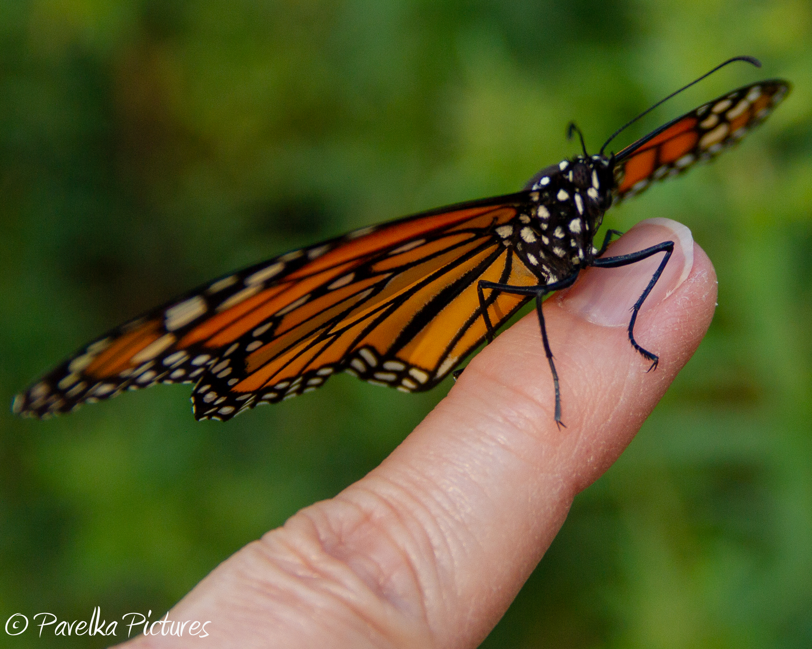
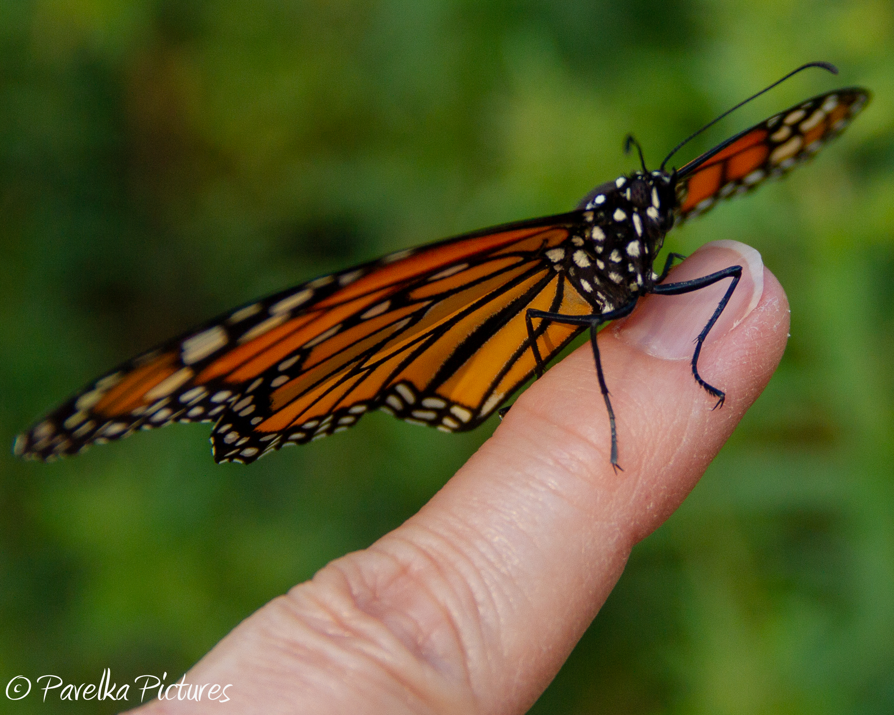

A Caterpillar Is Found! ♥

Monarch Cats are white, yellow, black and really cute! After they hatch they spend several days just resting and eating very small amounts of milkweed. But once they get their strength and start growing watch out - they can consume a LOT of milkweed in those tiny bodies!
When Should I Bring The Cats In From The Garden? ♥

The first year I had caterpillars on my milkweed I left them outside to get bigger before bringing them in the house. This was a mistake as I went from 11 caterpillars to 5 very quickly. They must have made juicy treats for the birds! This time I brought them in as soon as I found them.
How Do I Raise Them? ♥
You need an enclosure for the cats to live in when you bring them in from the outdoors. They are fairly inexpensive and don't need to be fancy. Put a paper towel on the bottom of the enclosure to make it easier to clean up the droppings and old milkweed. Replace the milkweed and paper towel every day. Be careful not to throw out any cats! Make sure to rinse the milkweed and remove any bugs or other things on the leaves. Some people rinse it in a bleach wash but I have never done that.
The Caterpillar Is Growing! ♥

Monarch Cats start out at less than .25 cm long and grow to 2 inches long! Once they start growing they get big quickly! After approximately 2 weeks the caterpillar will climb to the top of the enclosure and hang in a J. The caterpillar is getting ready to shed his skin and reveal a shiny green chrysallis.
Time For Patience ♥

Once the chrysallis has formed the caterpillar begins his metamorphisis to become a butterfly. I find it quite incredible that the caterpillar in it's small chrysallis will emerge as a beautiful butterfly! The chrysallis starts as a shiny green and develops a gold thread around the top of it. As the butterly matures the chrysallis becomes opaque and then clear.
When Will The Butterfly Be Done Cooking? ♥

Eventually the butterfly will eclose from the chrysallis and hang from the top of the enclosure for 3-4 hours while the wings dry. I have never seen one eclose and unfold but my daughter has! Once those wings are dry it will begin to fly around the enclosure.
When Do I Release My Monarch? ♥
I try and wait 24 hours before releasing it so that it is ready to fly away! Last year most of the my butterflies stayed around for a photo shoot. This year only 1 did!
Beautiful Monarchs! ♥
 
